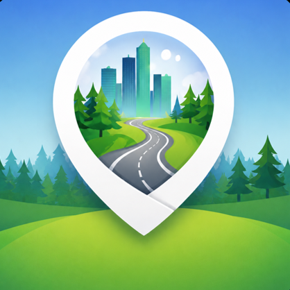

Tur og aktivitet
Ferd
Kart og aktivitetssporing for små og store turer.
Åpne FerdUt på tur, en liten hjerneøkt eller klare lag til første tee. Her finner du appene mine.

Kart og aktivitetssporing for små og store turer.
Åpne FerdGi hjernen en treningsøkt med hoderegning og geografi.
Åpne Brain TrainSSUD blander spillerne til jevnere scramble-lag, med handicap og valgfrie egenskapsvurderinger.
Åpne SSUDAppene åpnes direkte, uten bryllupspassord. SSUD kan også lagres som én HTML-fil og brukes uten nett.